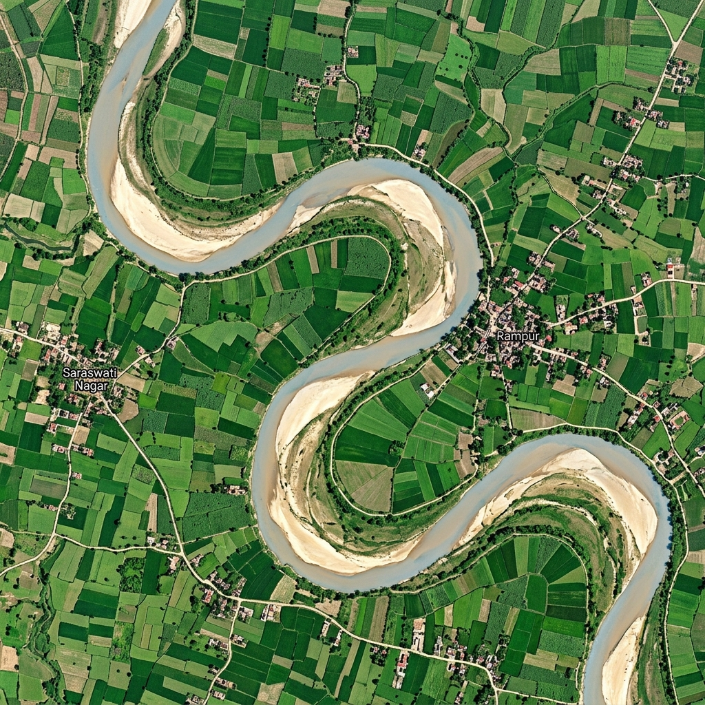
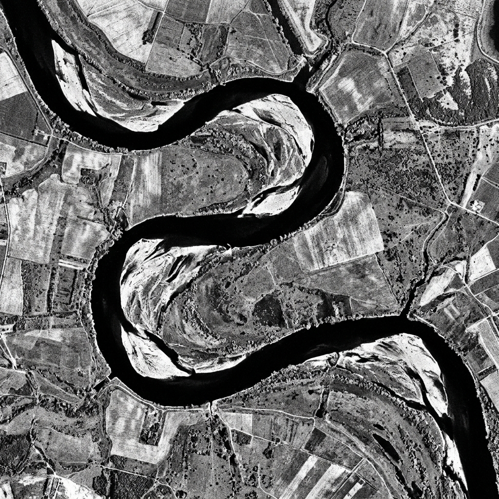

evidence
forSentinel-1 SAR radar + Sentinel-2 optical analysis flags sand-mining anomalies before the sandbar disappears — for lawyers, journalists, and local communities. Free and open.
Sentinel-1 radar + Sentinel-2 optical analysis. Pulsing zones show flagged SAR anomaly footprints
at real NGT-documented coordinates. Data polled from dashboard.json every 30 seconds.
Before/after Sentinel-2 true-colour, Sentinel-1 SAR, NDWI sandbar maps, and NDWI difference images showing actual physical soil reduction on India's rivers. All imagery: ESA Copernicus Sentinel-1/2 — open licence, served locally via GEE pipeline. Court records are corroborating context — satellite data is the evidence.
Loading satellite imagery…
Sentinel-1 SAR backscatter anomalies + Sentinel-2 NDWI sandbar morphology changes — actual physical evidence of riverbed alteration. Sand volume loss estimates and channel shift measurements derived from satellite imagery. 4 segments · All GEE-validated · Court records are corroborating context, not primary proof.
Sentinel-1 C-band radar detects metal equipment and vessels on sandbars. Log-ratio anomaly between a seasonal quiet-state baseline and target pass. Flagged area = statistically unusual radar return.
Sentinel-1 GRD · VV · 10mSentinel-2 NDWI water/sandbar mask tracks exposed sandbar area vs. a seasonal baseline. Flags deviations beyond the historical range for that specific segment and month — not a global threshold.
Sentinel-2 · NDWI · 10mTwo-signal fusion into NONE / LOW / ELEVATED / UNDER_REVIEW. The system never outputs "confirmed illegal." Confirmation is always a human, legal, or journalistic judgment — not an algorithm.
Anomaly Scorer · Not a legal tool